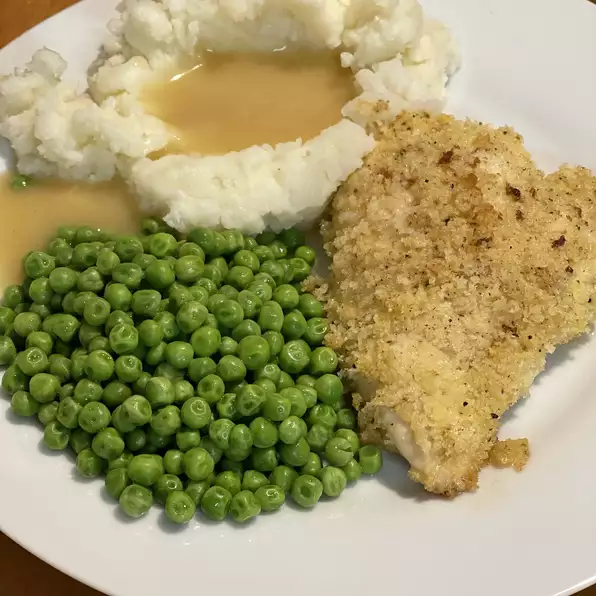

<!DOCTYPE html>
<html lang=" en"></html>
<meta charset="UTF-8">
<h1> Butter Chicken</h1>

<h3>Description</h3>
<p> Chicken breasts are dipped in beaten eggs and cracker crumbs, then baked with butter. These chicken breast are really tender and moist. Excellent flavor! I never have leftovers.
</p>
<h3> Ingredients</h3>
<li>
    2 eggs, beaten

</li>
<li>1 cup crushed buttery round cracker crumbs
</li>
<li>½ teaspoon garlic salt
</li>
<li>ground black pepper to taste
</li>
<li>4 skinless, boneless chicken breast halves
</li>
<li>½ cup butter, cut into pieces
</li>
<h3> Steps </h3>
<ol>
    <li>
        Preheat oven to 375 degrees F (190 degrees C).  
    </li>
    <li>Place eggs and cracker crumbs in two separate shallow bowls. Mix cracker crumbs with garlic salt and pepper. Dip chicken in the eggs, then dredge in the crumb mixture to coat.
    </li>
    <li>Arrange coated chicken in a 9x13 inch baking dish. Place pieces of butter around the chicken.

    </li>
    <li>Bake in the preheated oven for 40 minutes, or until chicken is no longer pink and juices run clear.

    </li>
</ol>
<a href = "https://www.allrecipes.com/recipe/24002/famous-butter-chicken/?internalSource=recipe%20hub&referringId=201&referringContentType=recipe%20hub&clickId=cardslot%2022" >Butter Chicken</a>